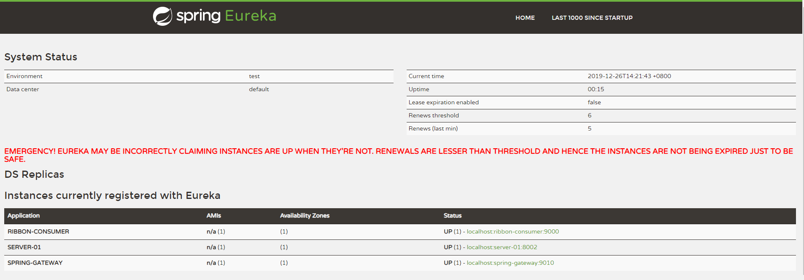

springcloud 配置gateway网关
概述：Spring Cloud Gateway 是 Spring Cloud 的一个全新项目，该项目是基于 Spring 5.0，Spring Boot 2.0 和 Project Reactor 等技术开发的网关，它旨在为微服务架构提供一种简单有效的统一的 API 路由管理方式。
Spring Cloud Gateway 作为 Spring Cloud 生态系统中的网关，目标是替代 Netflix Zuul，其不仅提供统一的路由方式，并且基于 Filter 链的方式提供了网关基本的功能，例如：安全、监控、埋点和限流等。
Spring Cloud Gateway 的特征：
- 基于 Spring Framework 5，Project Reactor 和 Spring Boot 2.0
- 动态路由
- Predicates 和 Filters 作用于特定路由
- 集成 Hystrix 断路器
- 集成 Spring Cloud DiscoveryClient
- 易于编写的 Predicates 和 Filters
- 限流
- 路径重写
vs Netflix Zuul
Zuul 基于 Servlet 2.5（使用 3.x），使用阻塞 API，它不支持任何长连接，如 WebSockets。而 Spring Cloud Gateway 建立在 Spring Framework 5，Project Reactor 和 Spring Boot 2 之上，使用非阻塞 API，支持 WebSockets，并且由于它与 Spring 紧密集成，所以将会是一个更好的开发体验。
要说缺点，其实 Spring Cloud Gateway 还是有的。目前它的文档还不是很完善，官方文档有许多还处于 TODO 状态，网络上关于它的文章也还比较少。如果你决定要使用它，那么你必须得有耐心通过自己阅读源码来解决可能遇到的问题。
术语
- Route（路由）：这是网关的基本构建块。它由一个 ID，一个目标 URI，一组断言和一组过滤器定义。如果断言为真，则路由匹配。
- Predicate（断言）：这是一个 Java 8 的 Predicate。输入类型是一个
ServerWebExchange。我们可以使用它来匹配来自 HTTP 请求的任何内容，例如 headers 或参数。 - Filter（过滤器）：这是
org.springframework.cloud.gateway.filter.GatewayFilter的实例，我们可以使用它修改请求和响应。

客户端向 Spring Cloud Gateway 发出请求。然后在 Gateway Handler Mapping 中找到与请求相匹配的路由，将其发送到 Gateway Web Handler。Handler 再通过指定的过滤器链来将请求发送到我们实际的服务执行业务逻辑，然后返回。
过滤器之间用虚线分开是因为过滤器可能会在发送代理请求之前（“pre”）或之后（“post”）执行业务逻辑。
实战
新建一个标准的 Spring Boot 工程，命名为 gateway，然后在 pom.xml 中引入以下依赖坐标
1 | <dependency> |
application.yml 配置文件内容如下
1 | server: |
spring.cloud.gateway.discovery.locator.enabled：是否与服务注册于发现组件进行结合，通过 serviceId 转发到具体的服务实例。默认为false，设为true便开启通过服务中心的自动根据 serviceId 创建路由的功能。- 访问这个
localhost:9010/SERVER-01/open/index就相当于访问SERVER-01上的/open/index路径

也可以为每个服务单独进行配置，只需修改下 application.yml 即可。
1 | server: |
- 重点是需要设置 filters 的 StripPrefix=1，此处配置去掉1个路径前缀。这样访问这个
localhost:9010/SERVER-01/open/index就相当于访问SERVER-01上的/open/index路径
参考自